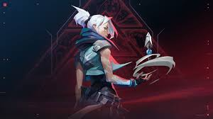

"Ser un WAZA" se refiere a una actitud de confianza y estilo, a menudo asociado con una forma de vivir auténtica y sin complejos. Es un término que se ha popularizado en algunas culturas y en redes sociales, utilizado para describir a alguien que se siente cómodo con su identidad y que no teme ser diferente. En este contexto, ser un WAZA implica tener carisma, originalidad y un enfoque positivo ante la vida.
El término "papu" tiene diferentes significados según el contexto. En algunos lugares, se usa como una forma cariñosa de referirse a un amigo o compañero, similar a "bro" o "pana". En otros contextos, especialmente en internet y redes sociales, puede referirse a una persona que es un poco ingenua o que se deja llevar fácilmente. También puede tener connotaciones culturales específicas, dependiendo del país o la comunidad en la que se use.
Valorant es un videojuego de disparos en primera persona (FPS) desarrollado y publicado por Riot Games, conocido también por su popular título League of Legends. Lanzado en junio de 2020, el juego combina elementos de táctica y estrategia, similar a Counter-Strike, con personajes únicos llamados "agentes", cada uno con habilidades especiales. En Valorant, los jugadores se dividen en dos equipos, uno de atacantes y otro de defensores, y el objetivo principal es plantar o desactivar una bomba (llamada "Spike"). La coordinación, la comunicación y el conocimiento de los mapas son fundamentales para tener éxito.
Jett es un agente de Valorant originaria de Corea del Sur, conocida por su agilidad y habilidades de movilidad excepcionales. Su personalidad audaz e independiente la convierte en una guerrera intrépida que busca desafíos y emociones en el campo de batalla. Con una conexión a la "Radianite", Jett se destaca en combate a corta distancia, utilizando su velocidad para moverse rápidamente y desatar su potencial en el combate. Su deseo de superarse constantemente la lleva a unirse a los Valorants, un grupo de agentes comprometidos a proteger su mundo de amenazas. Su estilo despreocupado y competitivo la hace destacar entre los demás, convirtiéndola en una cazadora que disfruta del caos y la libertad que ofrece la batalla.
